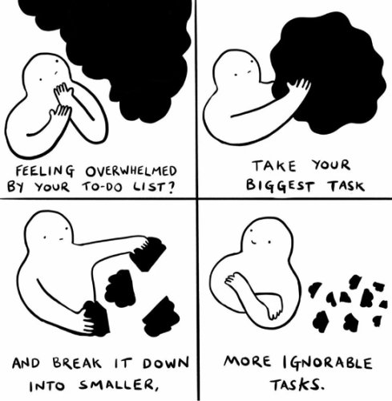

Overwhelm:
1) bury or drown beneath a huge mass.
syn: swamp, engulf, bury, deluge
2) defeat completely
syn: vanquish, overpower, overcome, overthrow, suppress, crush
It’s that time of year again. That most wonderful time of Get Things Done, via overbooked calendars and extra-long to-do lists.
There’s lots to do and a holiday deadline to do it all by.
Oh hey there, Overwhelm, come on in. Bring your friend-thoughts, “Too much! Can’t handle! Can’t do it all!” Also a big howdy to your companions panic, anxiety, self-disgust, and action-paralysis too.
Plan, clean, cook, bake, buy, wrap. Arrange travel, parties, family dinners, and obligatory socializing.
And be joyous about all of it, dammit.
Yes, it’s over the top with whelm.
A word that means the exact same thing as overwhelm.
Because at this fine time of the year, why not use two words to say what one word can, making that one word longer and extra-intense for no reason other than to increase drama.
Much like our To-do List.
So call it overwhelm, as in engulf, drown, overrun, overcome, crush.
And then pretend there’s a legit danger that we can indeed literally be crushed by words, petty tasks, and hope-to-do-‘ems.
The self, vanquished. Overcome. Undone.
By chores.
Oh noooooooooo.
Fragile little thing, eh?
I mean, you’d think that all those years spent propping up the image as we like it, building that self-thingy up, doing our best to believe that it’s us, would cushion and protect us.
But instead there’s frantic panic about the sense of self disappearing under the weight of The List. All that carefully cultivated self-control, the well-planned management of the future, just... disintegrating.
Oh.
The bad feeling starts to make sense.
So for a bit of relief, let’s notice first that overwhelm is just a feeling and a small handful of thoughts. Both of which we’re experts at experiencing.
Nothing we can’t handle there.
And then shockingly, we might also notice that nothing on The List actually needs to be done. At all.
Yes we think we want to, yes we think we have to.
But in actuality, none of it is necessary.
You know how we can know this? Because year after year, The List doesn’t get completed, there are always lots of things still left to do, and yet life goes on just fine.
So now, right about here, thought may trot out the notion of consequences and a painful future.
“The holidays won’t be joyous.”
Fine. Is overwhelm joyous? Surely nothing makes your family happier than seeing you drown in petty to-dos.
Or- “The kids will be sad and hate me, there won’t be any food, it will be a terrible holiday. This is not how it’s supposed to be.”
Like humans know how things are supposed to be. Sure, reality proves us wrong over and over, but never mind.
And let’s not forget what it means, about us, as a person, if we don't do all the important things on The List.
“No presents means I’m a bad parent. No parties means I’m unlovable. No family dinner means I’m weird, damaged, alone.”
As if the self- who we are- is defined by whether we go to a party or get the kids a toy.
That’s a whole lot of self-identity going on there, under the supposed guise of overwhelm.
So is your friendly Mind-Tickler saying don’t do anything at holiday time?
Nah, lots of things get done regardless. I mean, try not doing them. The body gets up off the couch for some things anyway.
So maybe it’s possible to play with holding The List lightly.
Noticing what we really want to happen vs. what would be nice but not worth the cost of panic.
It could turn out that we and our families have more fun and are happier when we are not stressed to the max.
We might chance doing less. Even only to find out if the self does indeed vanish or if it carries on, regardless of what gets done.
Because who knows? A vanished self might turn out to bring its own gifts-
gifts that might not be wrapped, or on The List at all-
maybe even a joy,
which could turn out to be
overwhelming.
Overwhelm
